SHIFT AI — 오늘의 AI 뉴스와 인공지능 소식
방금 보신 영상의 기사 전문과 오늘 올라온 기사를 아래에 모아 두었습니다.
오늘의 데일리 이슈
지난 호 보기1GB 소형 모델 LFM3, 메타 뮤즈 싱가포르행, 구글의 ‘잠자는 AI’
- 01모델·제품리퀴드 AI ‘LFM3’ 공개…약 1GB에 들어가는 소형 오픈 모델 6종
- 02비즈니스·일자리메타 AI 에이전트 ‘뮤즈’ 싱가포르 출시…쇼피·그랩·싱가포르항공과 연결
- 03연구구글 리서치, LLM에 ‘수면 단계’ 넣어 새 지식 잊지 않게 하는 방법 공개
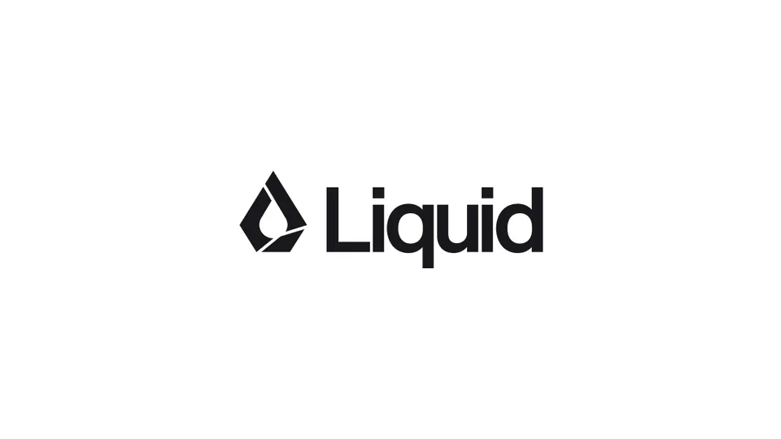
최신 기사
전체 보기리퀴드 AI ‘LFM3’ 공개…약 1GB에 들어가는 소형 오픈 모델 6종
리퀴드 AI가 10월 27일 소형 모델 묶음 LFM3를 공개했습니다. 17억~22억 파라미터 모델 6종이 텍스트와 이미지, 음성을 나눠 맡고, 텍스트 모델은 4비트로 줄이면 약 1GB에 들어가 기기 안에서 돌리는 쓰임새를 겨냥했습니다.
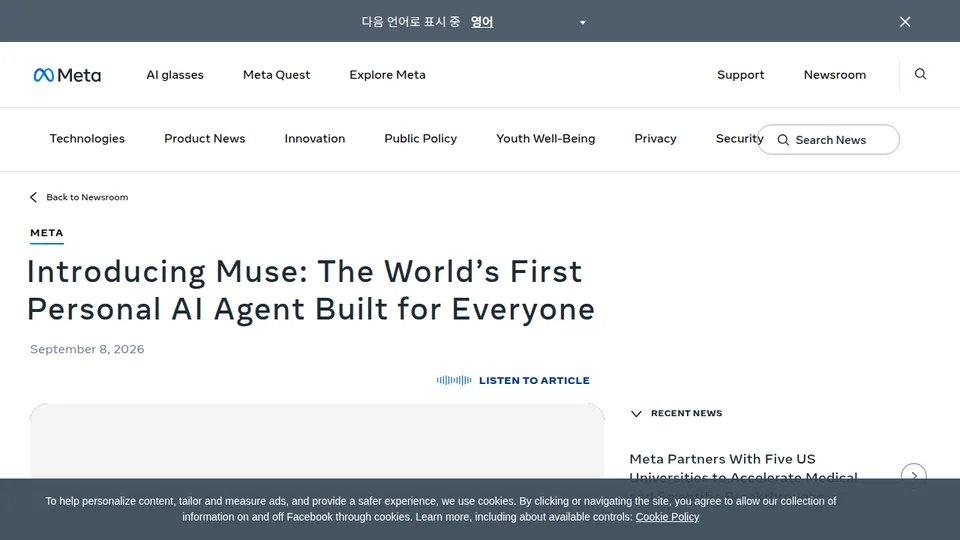
메타 AI 에이전트 ‘뮤즈’ 싱가포르 출시…쇼피·그랩·싱가포르항공과 연결
메타가 10월 27일 개인 AI 에이전트 ‘뮤즈’를 싱가포르에 내놨습니다. 쇼피·라자다에서 가격을 비교하고 그랩으로 장을 보고 싱가포르항공·아고다로 여행을 예약하는 현지 연결 기능이 붙었고 기본 사용은 무료입니다.
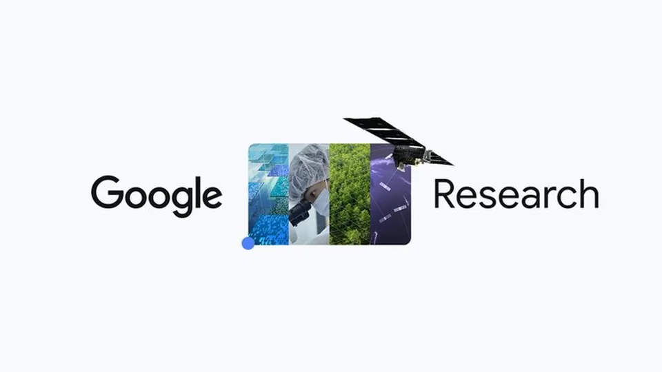
구글 리서치, LLM에 ‘수면 단계’ 넣어 새 지식 잊지 않게 하는 방법 공개
구글 리서치가 10월 27일 언어 모델이 배포된 뒤에도 새 사실을 익히면서 예전 지식을 덜 잊게 하는 ‘수면’ 방식을 소개했습니다. 깨어 있을 때 받은 정보를 잠자는 동안 모델 파라미터로 옮기고 스스로 만든 연습 데이터로 복습합니다.
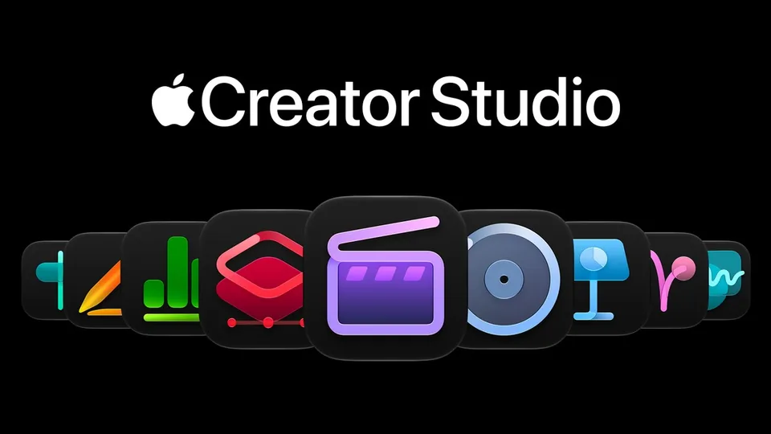
애플 키노트·페이지스·넘버스에 AI 비서…MCP로 외부 AI도 연결
애플이 키노트·페이지스·넘버스에 문서 내용을 이해하는 AI 비서를 베타로 넣고, 외부 AI 에이전트가 문서를 읽고 고칠 수 있도록 MCP도 지원하기로 했습니다. 다만 비서는 미국 영어로만 먼저 나오고, 새 운영체제가 필요합니다.
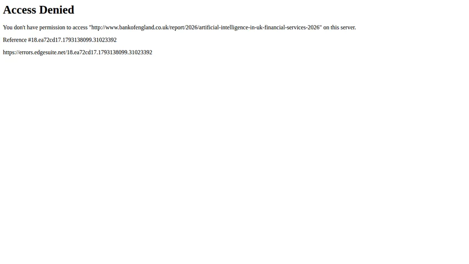
영국 금융사 86%가 AI 쓴다…넓은 권한 맡긴 에이전트는 2%
영국 중앙은행과 금융 감독기관이 금융회사의 AI 사용 실태를 조사한 보고서를 냈습니다. 응답 회사의 86%가 AI를 쓰고 있었지만 넓은 권한을 가진 AI 에이전트를 실제로 쓰는 곳은 2%에 그쳤습니다. 결제나 거래는 아직 사람이 맡고 있습니다.
앤트로픽, 비영리단체용 클로드 플러그인 공개…팀 요금제는 2명부터
앤트로픽이 비영리단체용 ‘클로드 포 논프로핏’ 플러그인을 내놨습니다. 모금 제안서, 이사회 자료, AI 사용 정책 점검 같은 반복 업무를 돕는 스킬과 연결 도구를 묶었고 팀 요금제 최소 인원도 2명으로 낮췄습니다.
영상으로 보고, 기사로 자세히 읽기
30초 영상은 인스타그램과 유튜브 쇼츠에, 그날 나온 소식은 스레드에 가장 먼저 올립니다.
튜토리얼
전체 보기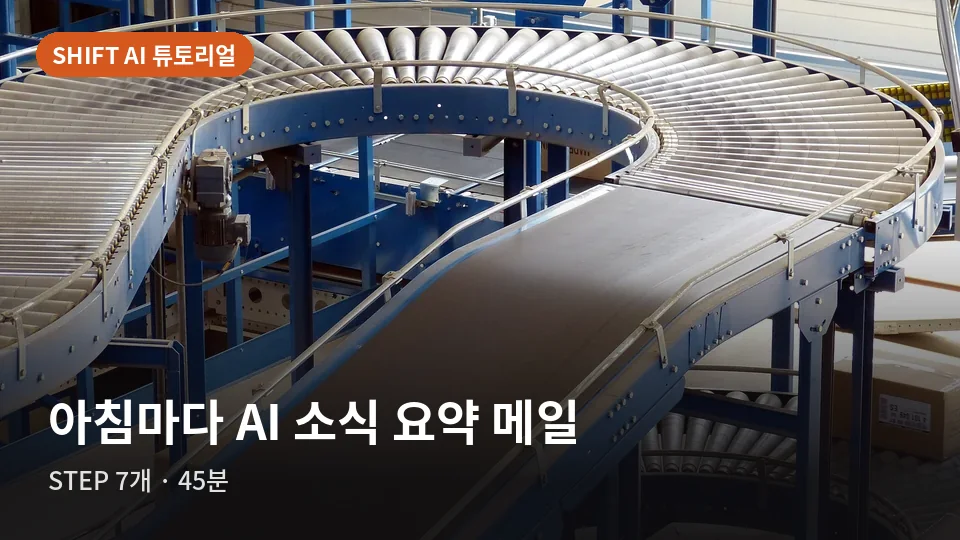
매일 아침 AI 소식 요약이 메일로 오게: n8n 첫 자동화 7단계
n8n으로 워크플로를 만들어 매일 아침 8시에 RSS 피드의 최신 글을 가져오고 AI가 한국어로 요약한 결과를 내 메일로 보냅니다. 편집부가 n8n 2.45.4를 직접 설치해 찍은 화면으로 따라갑니다.
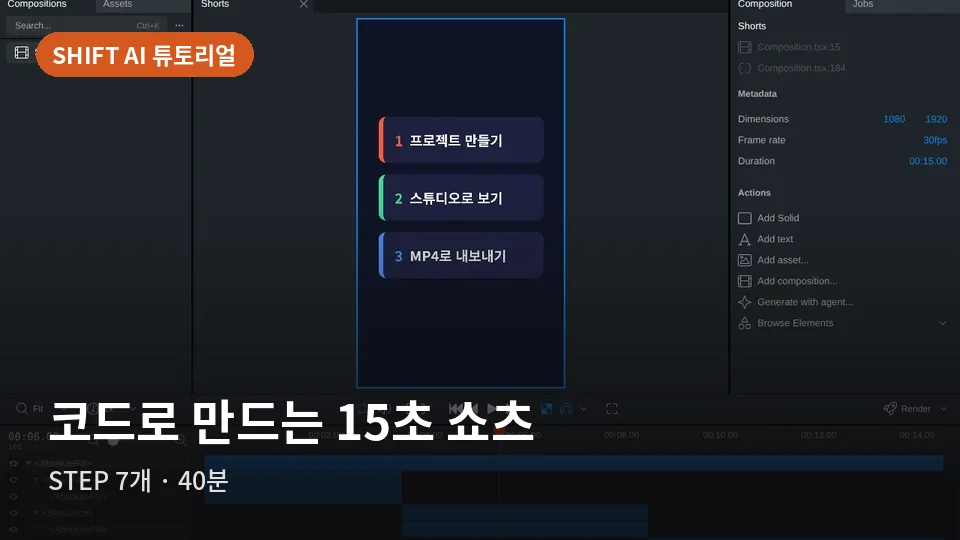
편집 프로그램 없이 코드로 만드는 15초 쇼츠: 리모션과 클로드 코드 7단계
리모션(Remotion)은 리액트(React) 코드로 영상을 만드는 프레임워크입니다. 장면 코드를 Claude Code에게 맡기는 방법을 공식 문서 기준으로 정리했습니다. 확인용 영상은 도형과 한국어 글자만 담은 릴스·쇼츠용 1080×1920 MP4로, Claude Code에게 줄 프롬프트와 같은 조건에서 편집부가 직접 쓴 코드로 렌더링했습니다.
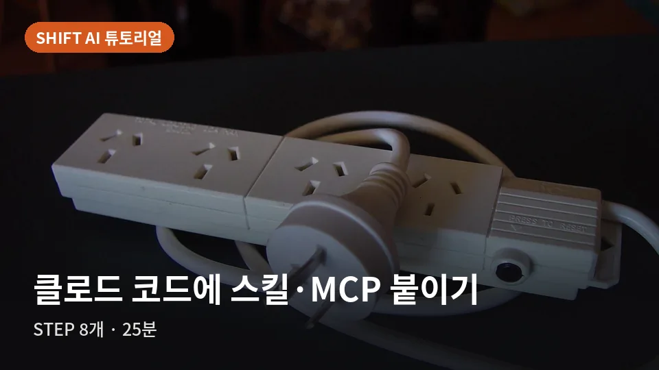
클로드 코드에 스킬·MCP 붙이는 법, 설치부터 떼기까지 8단계
스킬은 Claude에게 일하는 방법을 알려 주는 SKILL.md 폴더이고 MCP 서버는 Claude Code를 바깥 도구와 이어 주는 프로그램입니다. 앤트로픽 공식 스킬 저장소와 마이크로소프트 Playwright MCP를 예로 들어 공식 문서에 적힌 명령으로 설치하고 확인하고 지우는 순서를 정리했습니다.
무료 도구
전체 보기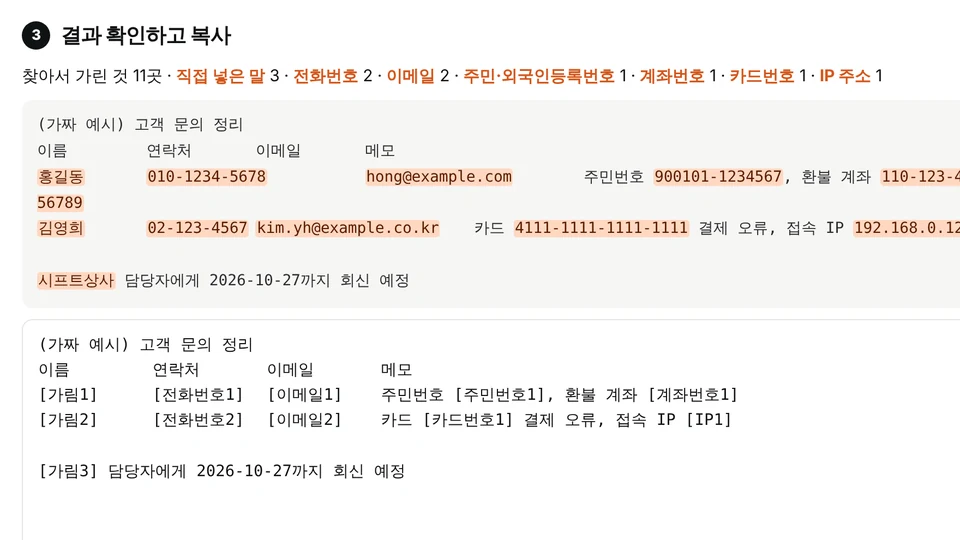
개인정보 자동 가리기
글이나 엑셀 표에 들어 있는 주민등록번호·전화번호·이메일·카드번호를 찾아 가립니다. 이름표로 바꿔 두면 나중에 AI 답을 원래 값으로 되돌릴 수도 있습니다.
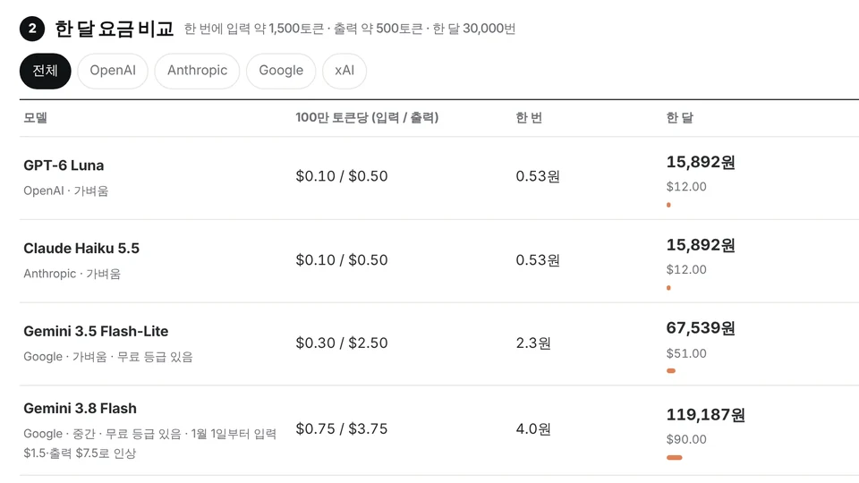
AI 요금 계산기 (원화)
챗GPT·클로드·제미나이 등 주요 AI API를 쓰면 한 달에 얼마가 드는지 공식 가격표를 기준으로 원화로 바로 비교합니다.
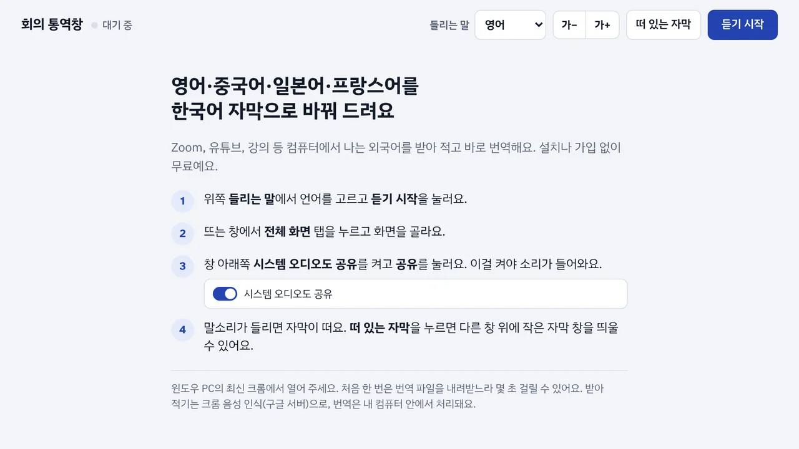
무료 실시간 크롬 번역 (회의 통역창)
영어·중국어·일본어·프랑스어로 진행되는 회의나 영상을 바로 한국어 자막으로 바꿔 줍니다. 크롬만 있으면 쓸 수 있습니다.
칼럼
전체 보기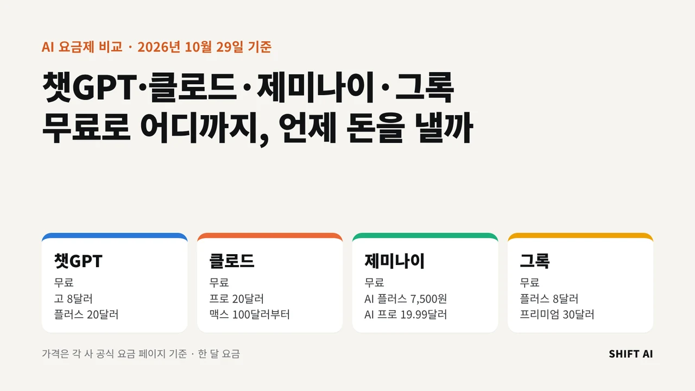
챗GPT·클로드·제미나이·그록 요금제 비교, 무료로 어디까지 되고 언제 돈을 내야 할까
네 서비스 모두 무료 요금제가 있고 첫 유료 요금제는 한 달 7,500원(제미나이 AI 플러스)에서 20달러(클로드 프로) 사이입니다. 무료로는 대화·검색·간단한 파일 작업까지 되고 일을 맡기는 에이전트, 코딩 도구, 영상 만들기부터 돈이 듭니다. 저는 무료로 한 달 써 본 뒤 가장 자주 막힌 기능 하나를 기준으로 유료를 고르는 쪽을 권합니다.
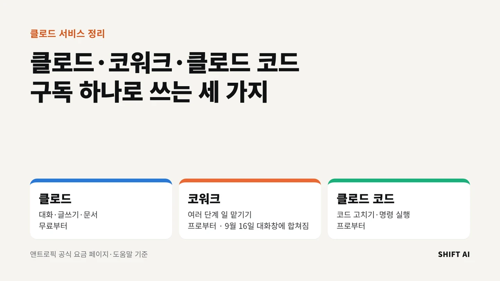
클로드·코워크·클로드 코드는 뭐가 다를까, 구독 하나로 쓰는 세 가지
클로드는 대화하고 문서를 만드는 앱이고 코워크는 여러 단계의 일을 맡기는 기능, 클로드 코드는 코드를 고치고 명령을 실행하는 개발 도구입니다. 셋은 프로(월 20달러) 구독 하나로 함께 쓰고 사용량 한도도 나눠 씁니다. 무료 요금제에서는 대화만 됩니다.
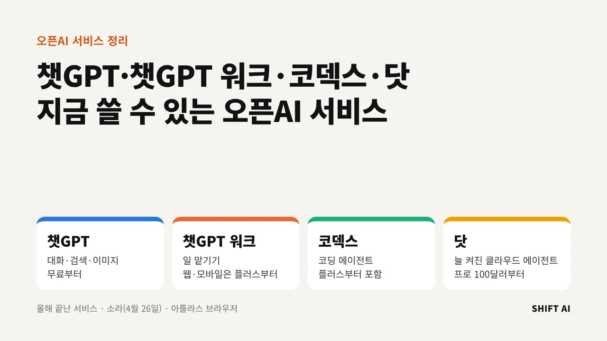
챗GPT·챗GPT 워크·코덱스·닷, 오픈AI 서비스 한 번에 정리
오픈AI는 7월 9일 대화(챗), 일 맡기기(워크), 코딩(코덱스)을 새 챗GPT 데스크톱 앱 하나에 모았습니다. 9월 29일에는 늘 켜져 있는 클라우드 에이전트 '닷'을 프로 요금제에 붙였습니다. 영상 앱 소라와 브라우저 아틀라스는 올해 서비스를 끝냈습니다.